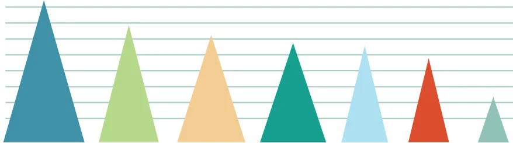
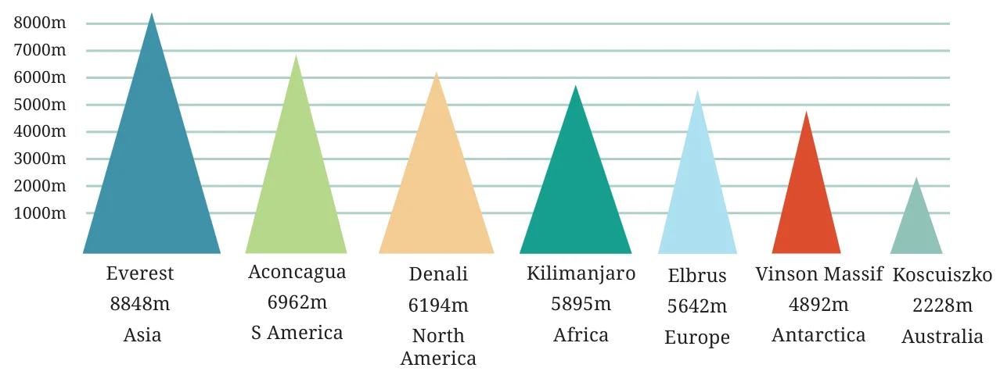

When data visualisations such as bar graphs are further beautified with more extensive artistic and visual imagery, they are called information graphics or infographics for short. The aim of infographics is to make use of attention-attracting and engaging visuals to communicate information even more clearly and quickly, in a visually pleasing way.
As an example of how infographics can be used to communicate data even more suggestively, let us go back to the table above listing the tallest mountain on each continent. We drew a bar graph with vertical bars (columns) rather than horizontal bars, to be more indicative of mountains. But instead of rectangles, we could use triangles, which look a bit more like mountains. And, we can add a splash of colour as well. Here is the result.


While this infographic might look more appealing and suggestive at first glance, it does have some issues. The goal of our bar graph earlier was to represent the heights of various mountains — using bars of the appropriate heights but the same widths. The purpose of using the same widths was to make it clear that we are only comparing heights. However, in this infographic, the taller triangles are also wider! Are taller mountains always wider? The infographic is implying additional information that may be misleading and may or may not be correct. Sometimes going for more appealing pictures can also accidentally mislead.
Taking this idea further, and to make the picture even more visually stimulating and suggestive, we can further change the shapes of the mountains to make them look even more like mountains, and add other details, while attempting to preserve the heights. For example, we can create an imaginary mountain range that contains all these mountains.
Is the infographic below better than the column graph with rectangular columns of equal width? The mountains look more realistic, but is the picture accurate?
For example, Everest appears to be twice as tall as Elbrus.

What is \(5642 \times 2\)?
While preparing visually-appealing presentations of data, we also need to be careful that the pictures we draw do not mislead us about the facts. In general, it is important to be careful when making or reading infographics, so that we do not mislead our intended audiences and we, ourselves, are not misled.